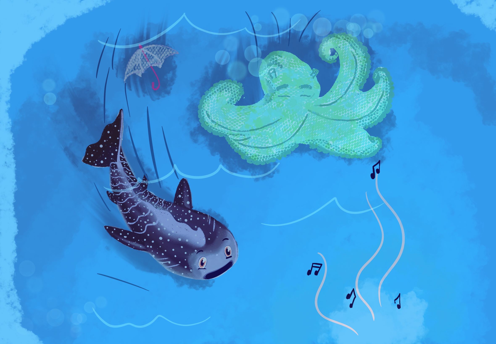
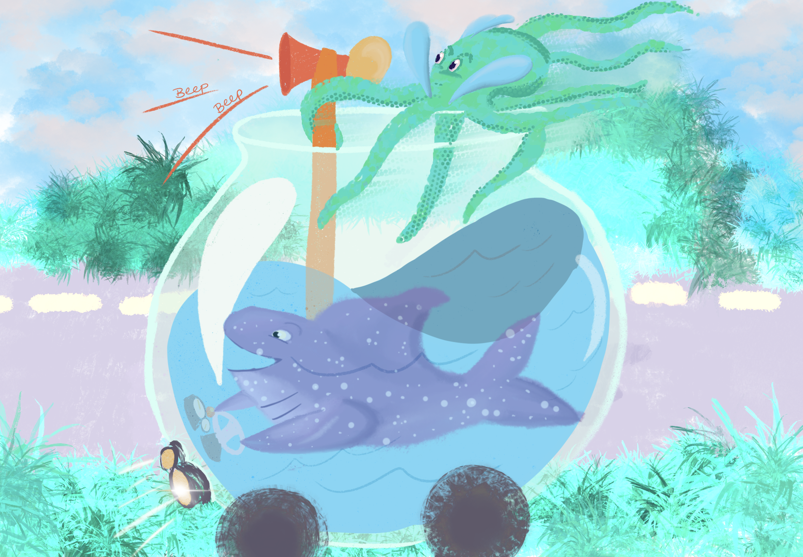
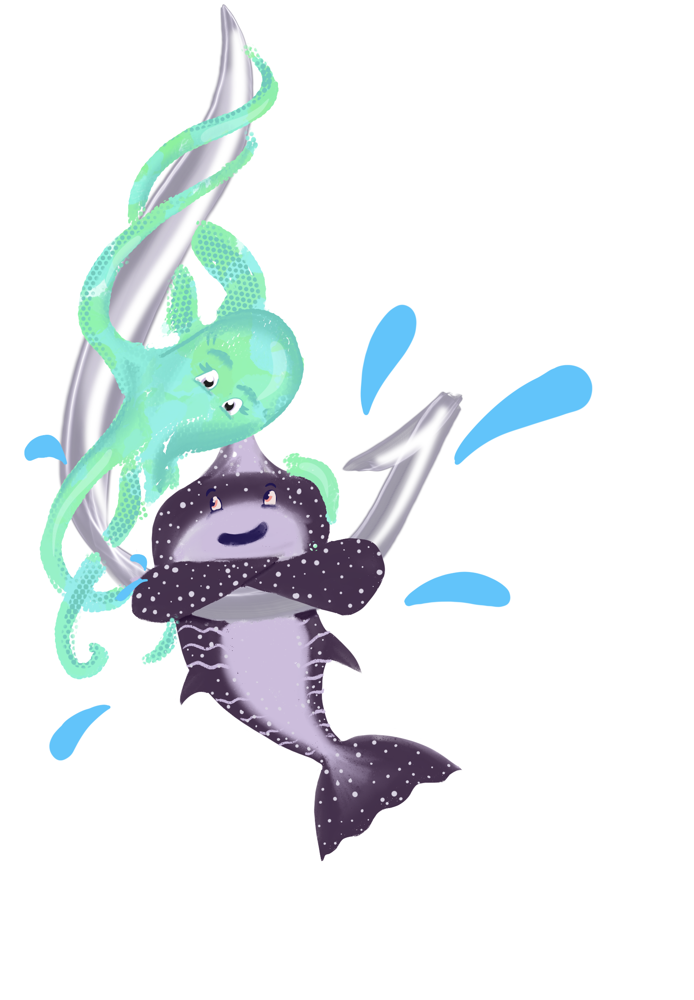

A picture book about unlikely best friends exploring the ocean and looking for a home.
Join Silky and Polpo in the magical city of Drizzle, where all sea creatures start their journey in a water vessel until they are ready for the ocean. From tea cups to stock pots and beyond everyone grows but how can an octopus and shark be friends once they get to the sea?


Natasha and Debra met at 826CHI, a national organization that provides creative writing opportunities for young student authors. Debra was a volunteer who would often illustrate young people's stories for the field trip programming and Natasha was a staffer who supported the programming.